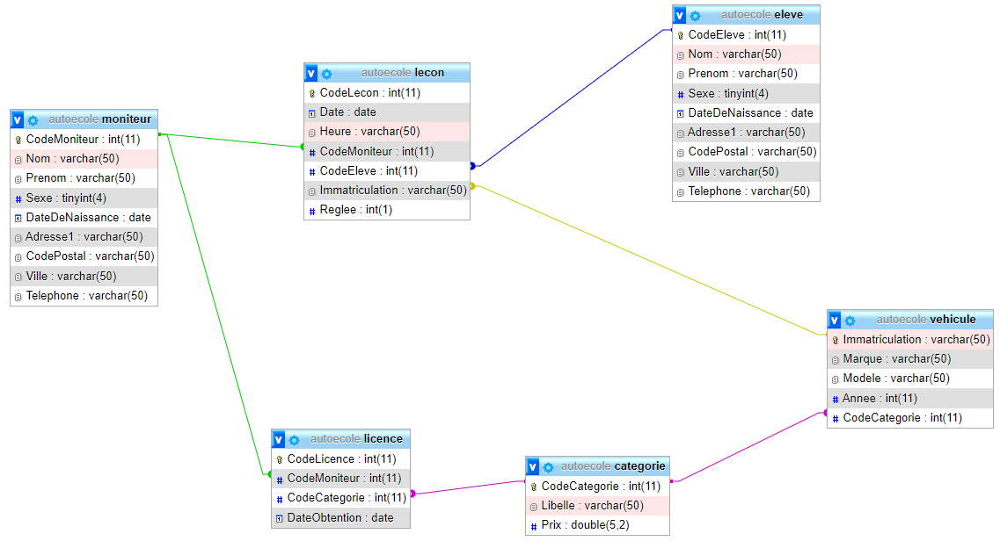

Projet

Description du projet :
Ce projet a été réalisé au sein de l'école en deuxième de BTS SIO. Ce projet nous a permis de découvrir la framework Symfony, de comprendre le concept d'ORM et de nous dirigier vers la sécurité et la confidentialité des données.
Contraintes & difficultés :
- La FrameWork Symfony (beaucoup de documentations)
- Le bundle Security
- La partie Admin

Conclusion
Ce projet m'a principalement permis de m'améliorer dans le langage Java. Les dates de début et de fin de rendu m'ont habitué au travail en entreprise et m'ont permis de m'entendre avec mes collaborateurs et de savoir trouver un consensus.